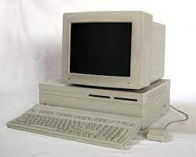

Le periferiche di output
Invece una periferica di output molto importante è il monitor, il monitor è un dispositivo
elettronico che permette di trasformare i dati in uscita in immagini e video. Il componente essenziale del
monitor è il display, la tecnologia attuale prevede display LCD, semplificando molto i display LCD sono
formati da griglie di pixel. I primi schermi LCD furono introdotti nel mercato solo nel 1971, ma solo nel
1985 Matsushita Electric produsse uno schermo piatto di dimensioni e risoluzione sufficienti per essere
incorporato nei computer personali.

Un'altra periferica di output molto conosciuta e usata è la stampante, la stampante permette la
stampa su materiali cartacei di documenti, disegni, fotografie ecc. Si può collegare via USB a un singolo
computer oppure si può collegare a una rete così da permettere la stampa a tutti i dispositivi connessi a
quella rete. La prima stampante fu inventata in Europa negli anni 1453/1455 dal tedesco Johannes Gutenberg,
mentre in Asia esisteva già dal 1041 grazie alla tecnica dell'inventore cinese Bi Sheng.